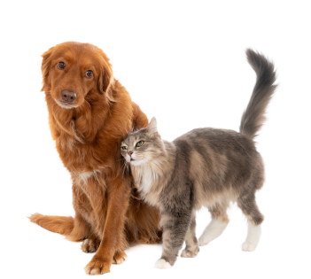

Грумер-салон – это место, где вы можете дать своему питомцу полный уход и улучшить его внешний вид. В грумер-салонах предоставляются различные услуги, которые помогут сделать вашего любимца более красивым, здоровым и ухоженным.


Наши Услуги
Грумер-салон – это место, где вы можете дать своему питомцу полный уход и улучшить его внешний вид. В грумер-салонах предоставляются различные услуги, которые помогут сделать вашего любимца более красивым, здоровым и ухоженным.
Одной из основных услуг является стрижка. Грумеры профессионально обрезают шерсть вашего питомца, чтобы подчеркнуть его форму и придать ему более эстетичный внешний вид. Существует множество видов стрижек для разных пород собак и кошек, поэтому грумеры всегда готовы проконсультировать вас и помочь выбрать наиболее подходящую стрижку для вашего питомца.